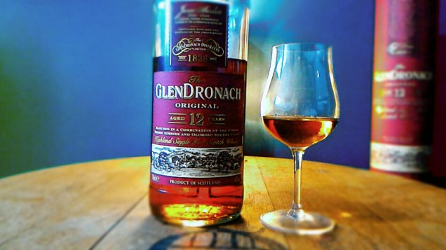
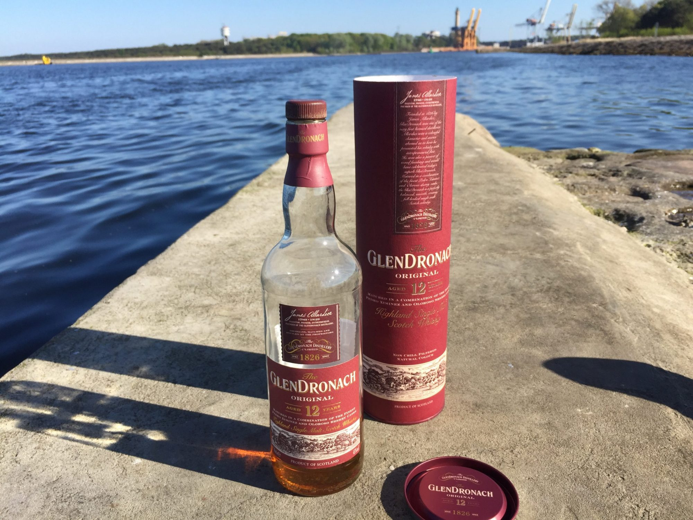

GLENDRONACH 12 ILE W NIM SHERRY ?
Przejdź do notki smakowej >>Dzisiaj spotkanie z jedną z destylarni, które bez wątpienia kojarzą się z beczkami po sherry. Ponieważ Glendronach 12 yo to jedna z najbardziej popularnych whisky wśród początkujących miłosników maltów, koniecznie musimy się jej przyjrzeć!
Glendronach to po gaelicku „jeżynowa dolina” (I to w sumie jedna z niewielu nazw, która ma coś wspólnego z rzeczywistością, bo smak jeżyn w sherrowym Glendronachu z pewnością odnajdziemy). Destylarnię założył James Allardice, który uzyskał licencję w 1826 roku, ale jak wiadomo, wcześniej przez dłuższy czas proceder odbywał się na nielegalu. Pierwsze wzmianki o „hobbystycznej działalności” pochodzą z 1771 roku.

Elementem wyróżniającym położoną na granicy Speyside i wschodniej części Highlands Glendronach jest kultywowane do dzisiaj leżakowanie whisky prawie wyłącznie w beczkach po sherry. Podstawowym "maltem" w ofercie zakładu jest Glendronach 12 yo Original komponowany z minimum 12-letnich destylatów starzonych w beczkach po sherry Oloroso i Pedro Ximenez, zabutelkowanych z mocą 43%, bez dodatku karmelu oraz bez filtracji na zimno.

Kolor: Jasny bursztyn
Nos: Czereśnie, bita śmietana z sosem karmelowym, Sherry, czekolada, pomarańcza, imbir, dojrzałe śliwki, goździki. Alkohol dość dobrze ukryty
Smak: Baaaaaardzo klarowny. Na początku pestki jabłek, potem czekolada, Advocaat, cukierki „Kukułki”, syrop klonowy, cukier muscovado, cynamon, orzechy laskowe
Finisz: Długi i przyjemny. Gorzka czekolada, rukola, miód, drewno, Sherry, skórka pomarańczy
Ocena:80/100
Nos: Czereśnie, bita śmietana z sosem karmelowym, Sherry, czekolada, pomarańcza, imbir, dojrzałe śliwki, goździki. Alkohol dość dobrze ukryty
Smak: Baaaaaardzo klarowny. Na początku pestki jabłek, potem czekolada, Advocaat, cukierki „Kukułki”, syrop klonowy, cukier muscovado, cynamon, orzechy laskowe
Finisz: Długi i przyjemny. Gorzka czekolada, rukola, miód, drewno, Sherry, skórka pomarańczy
Ocena:80/100